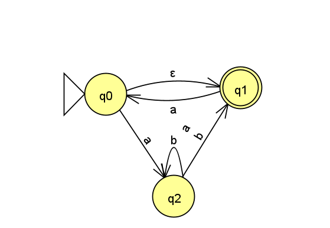

Homework 2
Last updated: Thu, 4 Nov 2021 14:27:37 -0400
Out: Mon Sept 20, 00:00 EST Due: Sun Sept 26, 23:59 EST
This assignment explores nondeterministic finite automata (NFAs).
Homework Problems
NFA Formal Description (4 points)
Exending the definition of "REACHABLE" (4 points)
DFA->NFA (4 + 4 = 8 points)
NFA->DFA Correctness, with empty transitions (4 points)
A Closure Operation (4 points)
README (2 point)
Total: 26 points
Submitting
Submit your solution to this assignment in Gradescope hw2. Please assign each page to the correct problem.
A submission must include a README containing the required information, in addition to the solution to the problems. Please make sure all solutions are legible.
1 NFA Formal Description
Recall that a NFA’s formal description has five components, e.g. N = (Q,\Sigma,\delta,q_0,F), where \delta:Q\times\Sigma_\varepsilon\rightarrow\mathcal{P}(Q) is the transition function mapping a state and input symbol (or no symbol, in the case of an empty transition) to a set of states.
Come up with a formal description for the following NFA:

2 Exending the definition of "REACHABLE"
Define \varepsilon\textrm{-{\footnotesize REACHABLE}}_{qs}, which is like the \varepsilon\textrm{-{\footnotesize REACHABLE}} definition from class, but extended to sets of states. (Don’t forget to handle the empty set!)
3 DFA->NFA
In class we showed how to convert an NFA into an an equivalent DFA, but not a DFA to NFA. Do this now.
Come up with a procedure \texttt{DFA}\!\!\rightarrow\!\!\texttt{NFA} that converts DFAs to equivalent NFAs. In other words, given some DFA M = (Q,\Sigma,\delta,q_0,F) that satisfies the formal definition of DFAs from class, \texttt{DFA}\!\!\rightarrow\!\!\texttt{NFA} should produce some NFA N = (Q^\prime,\Sigma,\delta^\prime,q^\prime_0,F^\prime) that satisfies the formal definition of NFAs and accepts the same language as M.
Then prove that your procedure is correct, i.e., that M accepts some string w if and only if N accepts w. You’ll probably want to use induction on the length of w.
4 NFA->DFA Correctness, with empty transitions
Complete the proof of correctness for \texttt{NFA}\!\!\rightarrow\!\!\texttt{DFA}_\varepsilon that we started in class.
Specifically, complete the proof that if N = (Q_N,\Sigma,\delta_N,q_0,F_N) and \texttt{NFA}\!\!\rightarrow\!\!\texttt{DFA}_\varepsilon(N) = D = (Q_D,\Sigma,\delta_D,\{q_0\},F_D), then \hat{\delta}_D(\{q_0\},w)=\hat{\delta}_N(q_0,w).
Then use that fact to prove that LanguageOf(N) = LanguageOf(D), i.e., that N accepts some string w if and only if D accepts w.
5 A Closure Operation
Let \textrm{\footnotesize EXPAND}_c on a language L, where \Sigma is the alphabet of L and c\in\Sigma, be:
\textrm{\footnotesize EXPAND}_c(L) = \left\{wc\mid w\in L\right\}
Prove that, for any c, \textrm{\footnotesize EXPAND}_c is closed for regular languages.